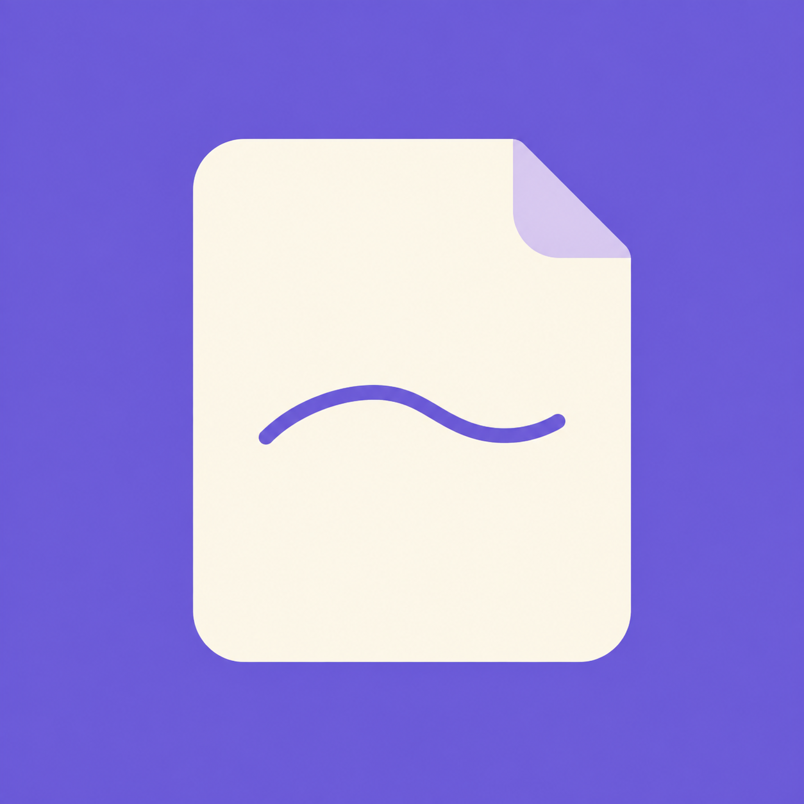
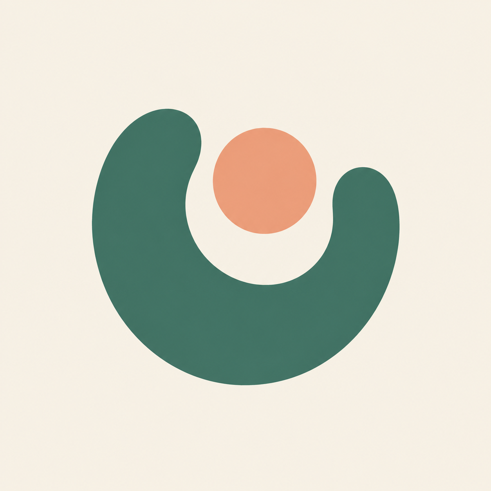
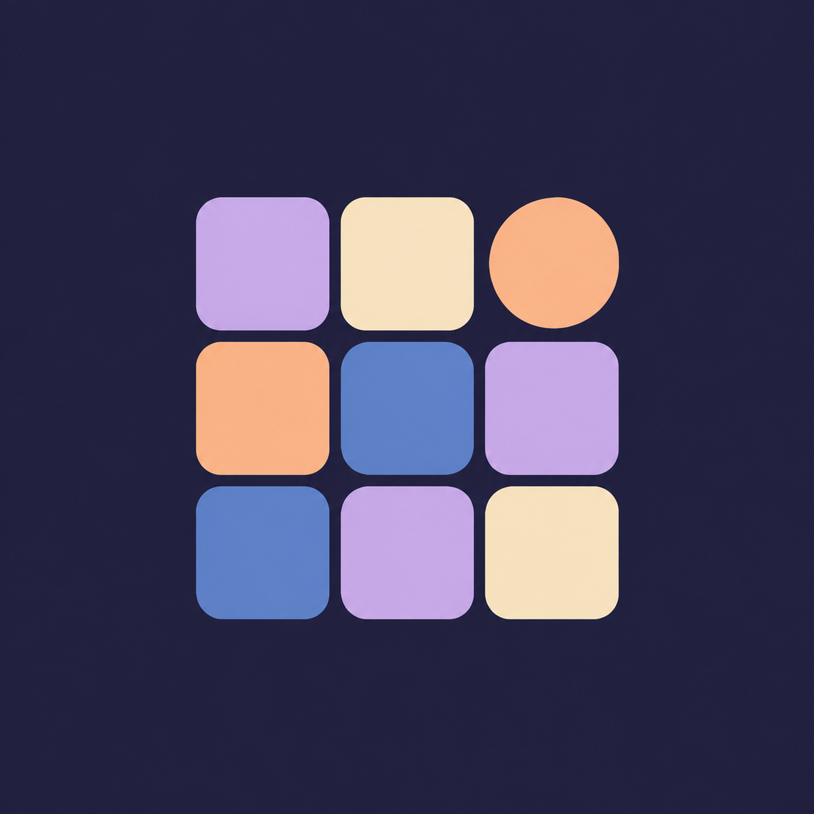

方案 01记录感

心情折页
一张柔软的日记纸，一笔心情曲线。
保留紫色气质，突出随手记录。
主屏幕
48 px 预览
48 px 预览
情绪像素 / APP ICON / 2026.09
三个不同方向。大图看气质，下面的小图看放到主屏幕后的辨识度。

一张柔软的日记纸，一笔心情曲线。
保留紫色气质，突出随手记录。

用一个拥抱，接住每天的感受。
安静、温暖，也更有自己的个性。

把每天的情绪，收进彩色格子里。
呼应心情日历，更活泼、醒目。
已选定③「情绪像素」，正式图标已应用。产品名称更新为「情绪像素」。